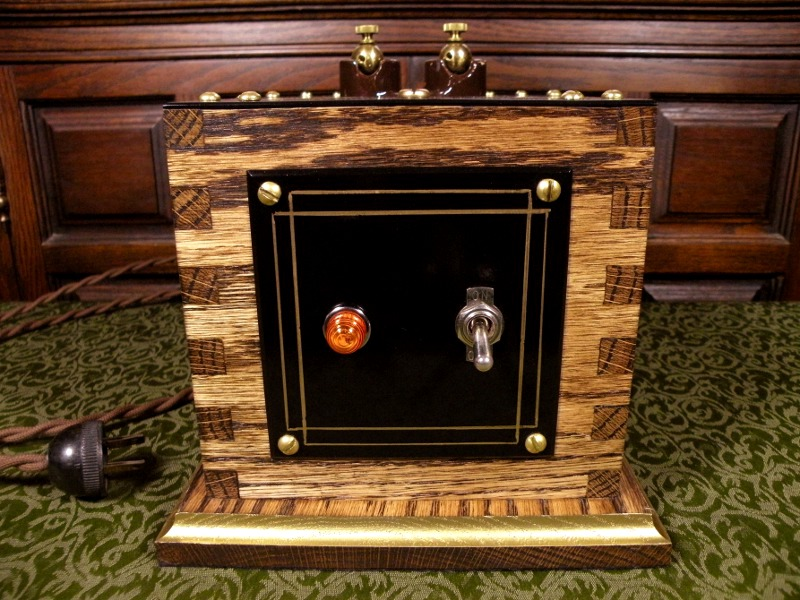
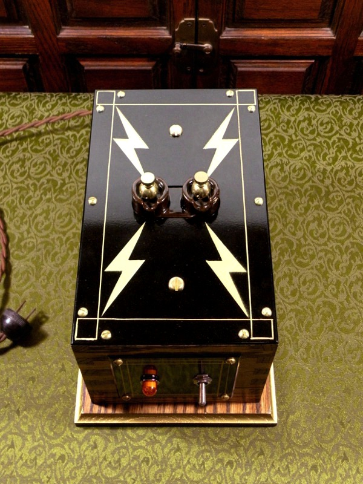

10,000 Volt Power Supply 10,000 Volt Power Supply
10,000 Volt Power Supply 10,000 Volt Power SupplyAspiring high-energy experimenters usually get their start with step-up transformers plugged into the household power supply. As neon signs are fading into a thing of the past, the 9,000 to 15,000 volt transformers which light them can be cheaply obtained second-hand; however an often overlooked source of sturdy high-voltage transformers is in oil burning furnaces.
Ten kilovolt transformers ignite the oil in such furnaces, and make excellent power supplies for high-voltage experiments. In addition to being compact and strongly built, oil burner ignition transformers are internally current-limited, the output usually supplying only 20 milliamps. This is an important safety feature; non-limited high-voltage transformers such as those found in microwave ovens, can easily kill.
The first run of my Tesla coil exposed several shortcomings throughout the system, the most irritating of these being the neccesity of manually plugging and unplugging the power supply to make adjustments. I knew that I needed to add a switch somewhere in the circuit, preferably prior to stepping the voltage up to 10,000 volts. My solution was to build an enclosure for the transformer. The oak box seen above houses the 10kv oil burner ignition transformer, a 4-amp fuse, a switch, and a neon indicator. The addition of those simple, cheap components has turned a cumbersome transformer into a versatile power supply.
Seen in the photo are my first attempts at a box joint; I was not prepared for how difficult half-inch oak would be to chisel out, but I am pleased with the result. The front and top panels are painted aluminum. The top electrodes are drilled and tapped brass balls, screwed directly onto the terminals of the transformer. Just to the left of the enclosure in the above photo lays the old bakelite plug I used, attached to the cotton covered cord. The cord is a reproduction; cotton sheathing covers the modern 600v insulation.
The top of the enclosure bears a lightning bolt pattern similar to my Jacob's ladder. The Jacob's ladder was designed with this particular transformer as the intended power source, and thus they are a sort of matched pair; however, I obviously have the option to use the power supply independantly, for other devices.
Created by Sean Corron, April 2, 2011.